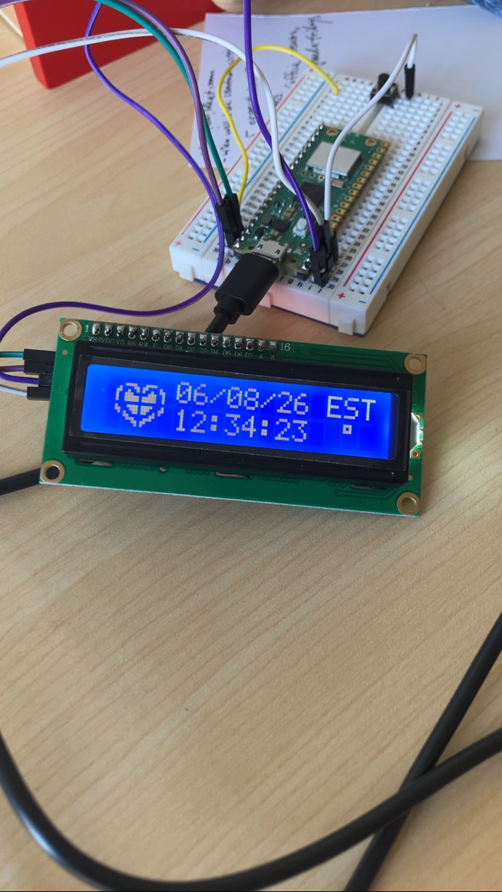

Final Prototype Design:
It's an LCD with an i2c backpack communicating with a Raspberry Pico W, with a button. When powered on, it connects to Wi-Fi and shows
the display screen. When the device receives a ping, the heart changes. When the user presses the button, the device sends a ping out, and a dot appears on the LCD.
The codebase is in Micropython, and is available here.
I chose to use a Raspberry Pico W, because it has Wi-Fi connectivity and it's an easily accessible microcontroller. Also what I had on hand. For a non-prototype design,
a custom board would be nice, and definitely more compact.
MQTT Communication
I'm calling this a longer duration project because this project was pretty on and off, and was mostly born out of random things I had acquired.
Goal: To design two little devices that could ping each other as long as they are both connected to Wi-Fi, and for it to be cost effective.
I wanted this to be a cute thing that could be shared between people.

This was a very heavy prototype-type project, with less emphasis on custom parts, since these were materials I happened to have.
My original plan:
A Raspberry Pi that would constantly pull from a GitHub repository that contains a txt file, that would get edited by each device
when a button was pressed.
This would be overbuilt, also would need the Pis to store GitHub credentials and constantly pull and push to a repo unsupervised.
After a bit I found out about MQTT servers, which meant that I didn't need a computer, I only needed a microcontroller, and no bad Git practices needed!
Most of the project fell together after that. I also found i2c backpacks for the LCDs, so less pins used! Although I do still have a lot of pins to spare.